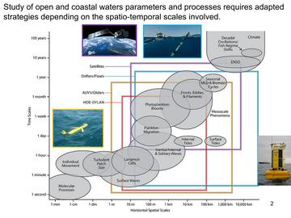
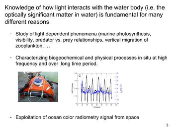
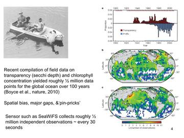
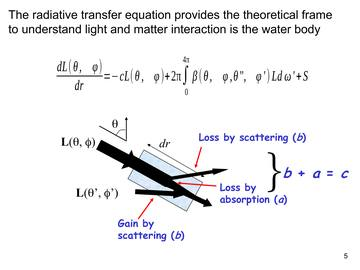
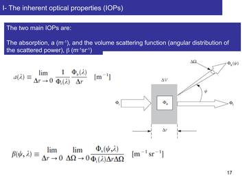
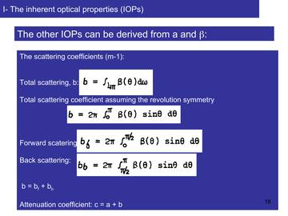
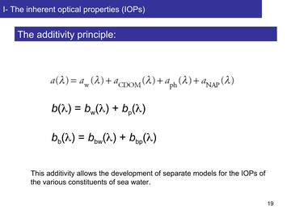

Home › A · Light in water & IOPs
Light entering the sea is absorbed and scattered. This module defines the quantities that describe those two processes (a, β, b, c), explains why they add up, and introduces the water types (Case 1, Case 2, optical classes) used to choose a model.
Plain words: what happens to a photon in the sea
A photon in water has two possible fates in a short path: it can be absorbed (its energy becomes heat or chemical energy) or scattered (it changes direction). The lecture (slide 5) writes this as the radiative transfer equation: along a path dr the radiance L is reduced by absorption and scattering out (together c = a + b) and increased by scattering in from all other directions, plus internal sources S.
| Symbol | Name | Meaning | What it implies | Numbers assigned |
|---|---|---|---|---|
| L(\theta,\varphi) | radiance [W m⁻² sr⁻¹ nm⁻¹] | Light power per unit area, solid angle and wavelength travelling in direction (θ, φ). | The unknown of the equation; θ is measured from the vertical. | |
| dr | path element [m] | Thin slab of water crossed by the beam. | Everything is a rate per metre along the path. | |
| c | attenuation coefficient [m⁻¹] | Fraction of the beam lost per metre, by absorption and by scattering out of the beam: c = a + b. | Beer–Lambert uses c, not a: a transmissometer measures c. | example used in module A: a = 0.08, b = 0.12 ⇒ c = 0.20 m⁻¹ (illustrative) example used in module E: c = 0.5 m⁻¹ ⇒ 61 % left after 1 m (illustrative) |
| a | absorption coefficient [m⁻¹] | Photon energy converted to heat or chemistry. | Removes photons for good; sets light penetration and the colour of the sea. | pure water minimum: ≈ 0.005 m⁻¹ near 415 nm (slide 24, read from graph) clearest gyre, total: ≈ 0.007 m⁻¹ at 410–420 nm (slide 26, Morel et al. 2007) |
| b | scattering coefficient [m⁻¹] | Photons change direction. | Redirects, never destroys: scattered photons can re-enter the beam from other directions. | pure sea water, 500 nm, S = 37: 2.88e-03 m⁻¹ (verified.json (slide-20 formula)) Case 1 particles, 400 nm: ≈ 0.18 m⁻¹ (slide 58, read from graph) |
| \beta | volume scattering function [m⁻¹ sr⁻¹] | How scattered power is distributed over angles (θ,φ) ← (θ′,φ′). | Forward-peaked for particles, symmetric for pure water; b = 2π∫β sinθ dθ. | pure water, 90°, 546 nm, S = 0: 9.44×10⁻⁵ m⁻¹ sr⁻¹ (slide-20 formula; textbook 0.869e-4) |
| d\omega^{\prime} | solid-angle element [sr] | Integration over every incoming direction; dω = sinθ dθ dφ. | The slide prints a factor 2π in front of the integral; the textbook does not. | |
| S | source term [W m⁻³ sr⁻¹ nm⁻¹] | Light created inside the water (fluorescence, Raman, bioluminescence). | Zero for purely elastic problems; matters for Chl fluorescence. |
Note: the slide prints a factor 2π in front of the integral. The textbook (Radiative Transfer Equations) writes the in-scattering term as ∫β L dω′ over 4π without it; we keep the slide form for the course and mention the difference.
The two main IOPs and what is derived from them
Slide 17: the two main IOPs are the absorption coefficient a (m⁻¹) and the volume scattering function β(ψ,λ) (m⁻¹ sr⁻¹, the angular distribution of scattered power). Everything else follows (slide 18):
| Symbol | Name | Meaning | What it implies | Numbers assigned |
|---|---|---|---|---|
| a | absorption coefficient [m⁻¹] | Absorbed fraction of the incident flux per unit path. | A rate: doubling the path doubles the absorbed fraction (thin slab). | |
| \beta | volume scattering function [m⁻¹ sr⁻¹] | Scattered power per unit solid angle, per metre, per incident flux. | Contains all the angular information about scattering. | |
| \Phi_i | incident flux [W] | Power entering the thin volume ΔV. | It cancels: IOPs do not depend on how bright the beam is. | |
| \Phi_a | absorbed flux [W] | Power absorbed inside ΔV. | ||
| \Phi_s | scattered flux [W] | Power scattered at angle ψ into ΔΩ. | ||
| \Delta r | thickness [m] | Thickness of the volume, taken to the limit 0. | Limits make a and β properties of the water, not of the instrument. | |
| \Delta\Omega | solid angle [sr] | Detector cone around ψ, taken to the limit 0. |
| Symbol | Name | Meaning | What it implies | Numbers assigned |
|---|---|---|---|---|
| b | total scattering coefficient [m⁻¹] | Integral of β over all directions (revolution symmetry assumed). | b/c is the single-scattering albedo of the volume. | pure sea water 500 nm: 2.88e-03 m⁻¹ (verified.json) |
| \beta | volume scattering function [m⁻¹ sr⁻¹] | Angular distribution of scattered power. | Pure water: U-shaped, minimum at 90° (slide 22). | |
| \sin\theta | sinθ weight [—] | Comes from dω = 2π sinθ dθ for a symmetric β. | Directions near 0° and 180° carry little solid angle even when β is large there. | |
| b_f | forward scattering [m⁻¹] | Angles 0 → 90°. | Large for particles (diffraction). | |
| b_b | backscattering [m⁻¹] | Angles 90° → 180°. | The part that can leave the sea and be seen from space. | pure water: b_bw/b_w: 0.50 (verified.json) particles: b_bp/b_p: ≈ 0.005–0.035 (slide 71, read from graph) |
| c | attenuation [m⁻¹] | c = a + b = a + b_f + b_b. | Same c as in the RTE. |
Numerical example. With c = 0.5 m⁻¹ a collimated beam keeps e−0.5 = 0.607 of its power after 1 m (L = L₀e−cr, verified in Python).
IOP versus AOP, and additivity
IOPs depend only on the constituents and not on illumination: for one water body they are the same for a Sun at the zenith and at 60° (slide 11). AOPs (Kd, reflectance, …) depend on the medium and on the light field (textbook: Apparent Optical Properties, oceanopticsbook.info). IOPs are additive:
| Symbol | Name | Meaning | What it implies | Numbers assigned |
|---|---|---|---|---|
| a | total absorption [m⁻¹] | Sum of the independent contributions. | Additivity lets us model each constituent alone. | |
| a_w | water [m⁻¹] | Pure sea water. | Minimum in the blue, strong rise beyond 550 nm. | minimum: ≈ 0.005 m⁻¹ near 415 nm (slide 24, read from graph) |
| a_{CDOM} | coloured dissolved organic matter [m⁻¹] | Passes a 0.2 µm filter. | Exponential in λ, slope S′ ≈ 0.014 nm⁻¹. | S′: 0.014 nm⁻¹ (0.007–0.026) (slide 41; textbook CDOM) |
| a_{ph} | phytoplankton [m⁻¹] | Pigment absorption, reduced by packaging. | Peaks at 443 and 675 nm. | Chl a peaks: 443 and 675 nm (slide 28) |
| a_{NAP} | non-algal particles [m⁻¹] | Detritus, bacteria, minerals. | Exponential like CDOM; they are lumped as a_cdm. | S: 0.011 nm⁻¹ on average (slide 35) |
| b | total scattering [m⁻¹] | Water + particles. | Particles dominate in most waters. | |
| b_w | water scattering [m⁻¹] | Molecular scattering. | λ⁻⁴·³ dependence. | 500 nm, S = 37: 2.88e-03 m⁻¹ (verified.json) |
| b_p | particle scattering [m⁻¹] | All particles. | Weak spectral dependence (λⁿ). | |
| b_b | total backscattering [m⁻¹] | Backward hemisphere. | Sum of water and particle parts. | |
| b_{bw} | water backscattering [m⁻¹] | Half of b_w. | ||
| b_{bp} | particle backscattering [m⁻¹] | Measured by 117° sensors. | b_bp/b_p reveals particle type. |
This allows a separate model for each constituent (modules B–D) and is why the lecture goes constituent by constituent.
Case 1, Case 2 and optical classes
Morel & Prieur (1977) separated waters in which phytoplankton dominate the optics (Case 1) from those in which other constituents matter (Case 2). The modern wording (textbook, Classification Schemes): Case 1 = optical properties determined primarily by phytoplankton and co-varying CDOM and detritus; Case 2 = everything else. Slide 15 shows that Case 1 covers 81–87 % of the ocean depending on the season; slide 16 introduces 17 optical water classes (Loisel et al., 2023) for a finer description.
Worked example, quick Q&A and memory hooks
Scattering out of the beam is the larger loss here.
Quick Q&A
A: Because scattered photons are also removed from the beam; it measures c = a + b (slide 60).
A: No: it depends on the Sun and the clouds; it is not even a good AOP (textbook).
Memory hooks
- IOPs = what the water is; AOPs = what the light does in it.IOP là bản chất nước; AOP là phản ứng của ánh sáng.
- Case 1/2 = co-variation, not geography.Case 1/2 là đồng biến, không phải địa lý.
Lecture slides for this module (Loisel, Marine Optics)
10 slides of the lecture “Marine Optics” (H. Loisel, LOG). Numbers refer to the slide number in the file. Click a page to enlarge; browse all pages.









Exam checklist — points you must mention
- Write the RTE of slide 5 and name the terms; state c = a + b.
- Give the units of a, β, b, c and the integrals defining b, b_f, b_b.
- State additivity for a, b and b_b.
- Say why IOPs do not depend on the Sun angle and name two AOPs.
- Define Case 1 / Case 2 (co-variation) and say why “Case 2 = coastal” is wrong (slide 15).
- c = a + b; β (m⁻¹ sr⁻¹) là hàm tán xạ thể tích; b = 2π∫β sinθ dθ.
- IOP không phụ thuộc chiếu sáng và cộng tính; AOP thì có phụ thuộc.
- Case 1 = đồng biến với thực vật phù du; Case 2 = còn lại; 17 lớp quang học.
Practice calculations
These tools run in your browser and are checked against Python:
Lecture slides (14 slides; use ← → keys or the buttons)
Quick self-check (10 of 19 questions)
Open the full bank: 19 multiple-choice + 3 essay questions →